The Secret
A few moments I never wanted to forget.
This is not an argument and it is not asking you for anything. It is simply a way of showing you what some moments came to mean to me — without deciding what they meant to you.
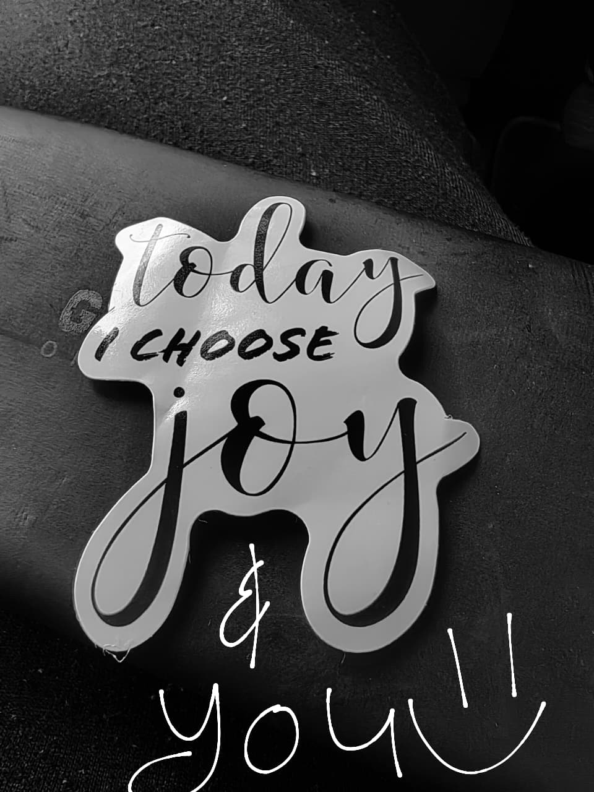
Good morning 🌻 · Good night ✨
The crown I remember ♛
There was something about you when you wore your hair tied up like that. I used to tease you and call you my princess. Without missing a beat, you would correct me: Queen.
You were right. Sometimes it was a morning message, sometimes a goodnight, and sometimes only that secret little smile when we crossed each other. Those moments were small enough that nobody else would have noticed them. I did.
It wasn't the crown I imagined on your head that stayed with me. It was the way your presence made ordinary moments feel royal.
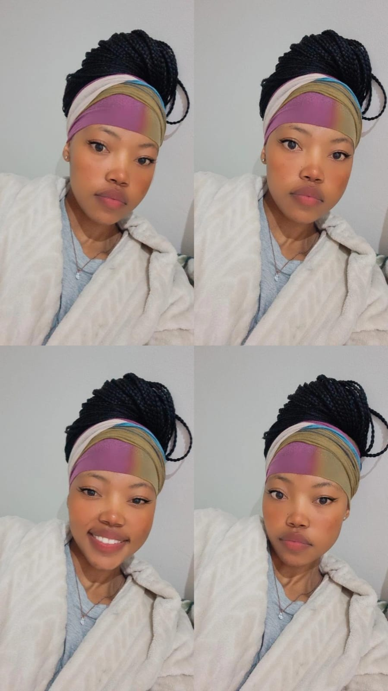
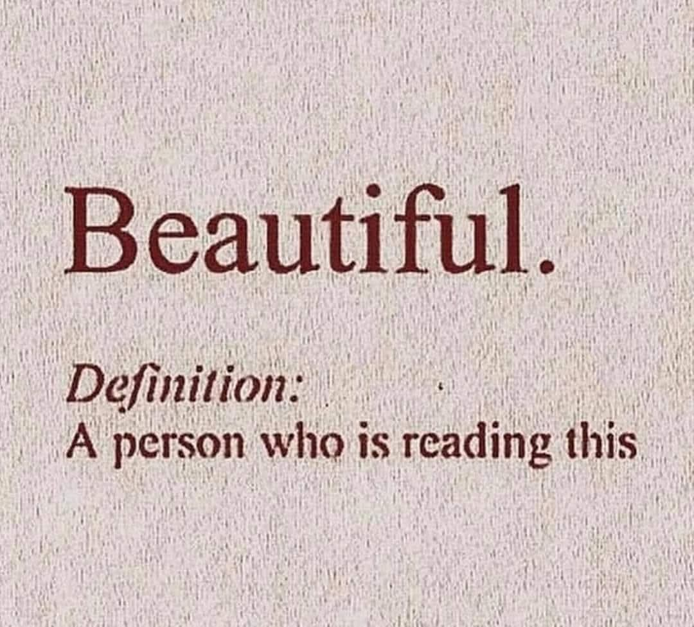
Some memories were only glances. Others came with words I never forgot.
Ice cream solves almost everything.
Roxy’s Memory
I remember that day at Roxy’s. I remember leaving, hearing you call me, turning around — and you telling me that you liked me too.
The cars, the restaurant, whatever I had been thinking about a few seconds earlier became background noise. For one small moment, something I had quietly carried in my heart was spoken back to me.
The ice cream was almost as sweet as those words were to me. Almost.
I will always hold onto that moment.
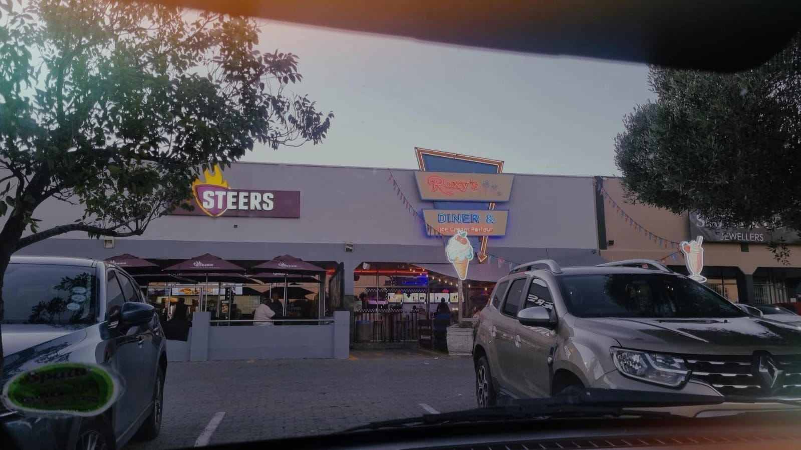
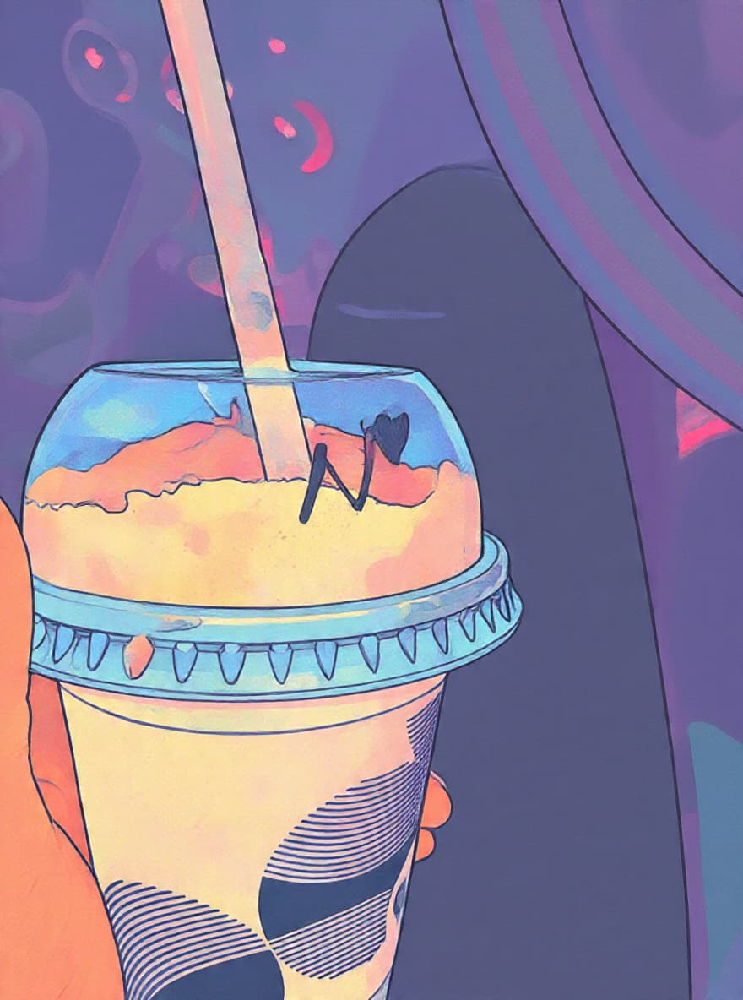
From our conversation
“I bought 2 burgers one is for you🌚 … please take it🤍”
Some of my favourite memories of you aren't grand enough for a movie. They're burgers. Colouring books. Something left in a bag. A look held a little too long. Things that could disappear inside an ordinary day if nobody bothered to remember them.
The little things
Some of the best memories were never trying to be important.
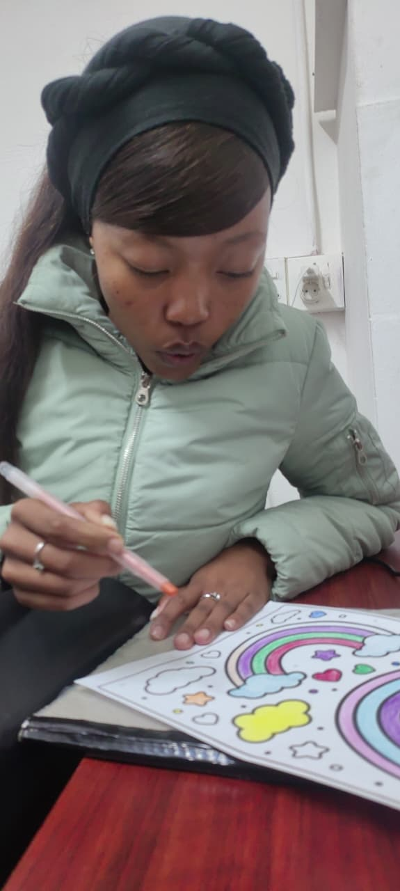
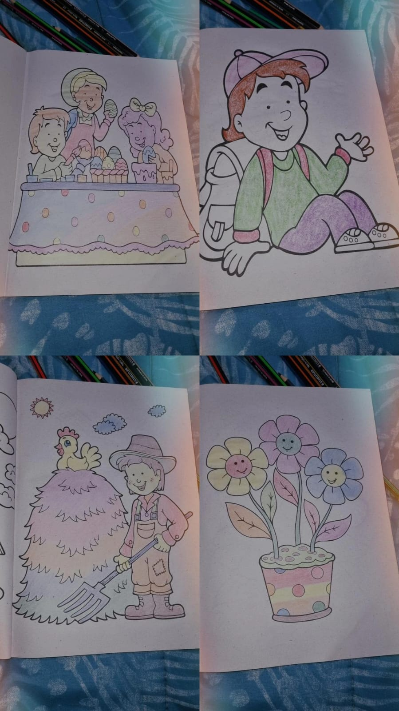
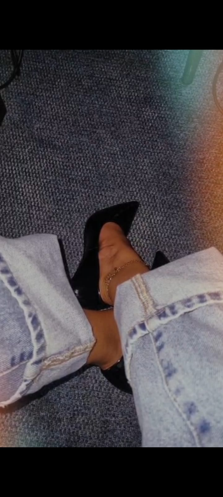
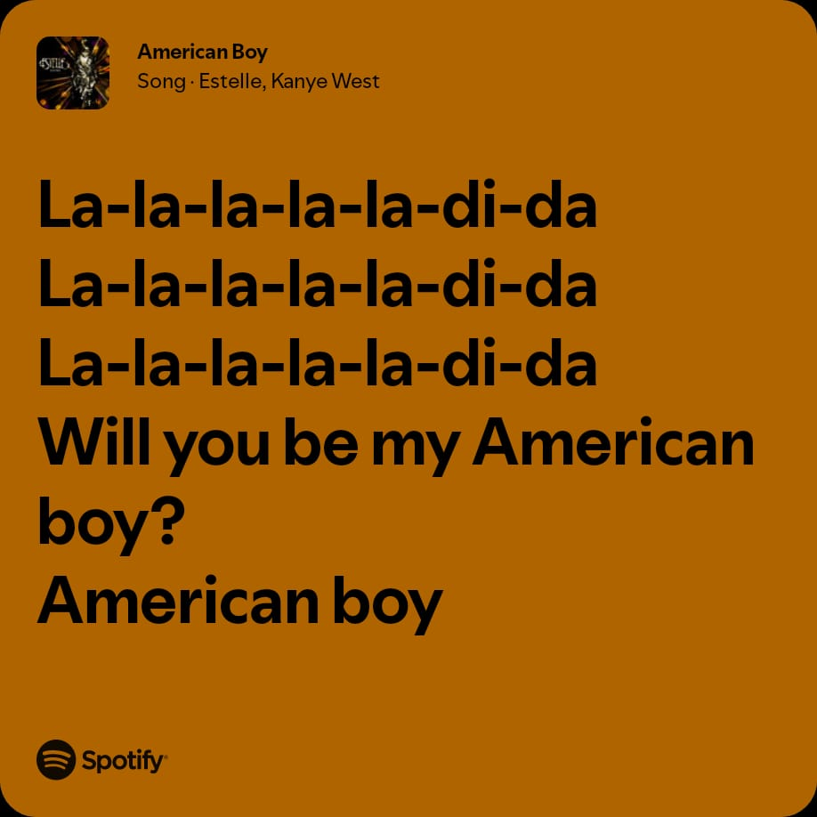
“You smiled, and my heart farted butterflies 🦋”
Maybe this is what I was trying to do: not rescue you, not solve every difficult day — just add something good to one of them. And perhaps sometimes you were doing exactly the same thing for me.
Make me understand.
Two people can care about each other and still completely miss each other.
I spent too much time believing that if I explained myself accurately enough, understanding would follow. Sometimes you were asking me to understand you while I was still trying desperately to make myself understood.
Grace
You are His workmanship.
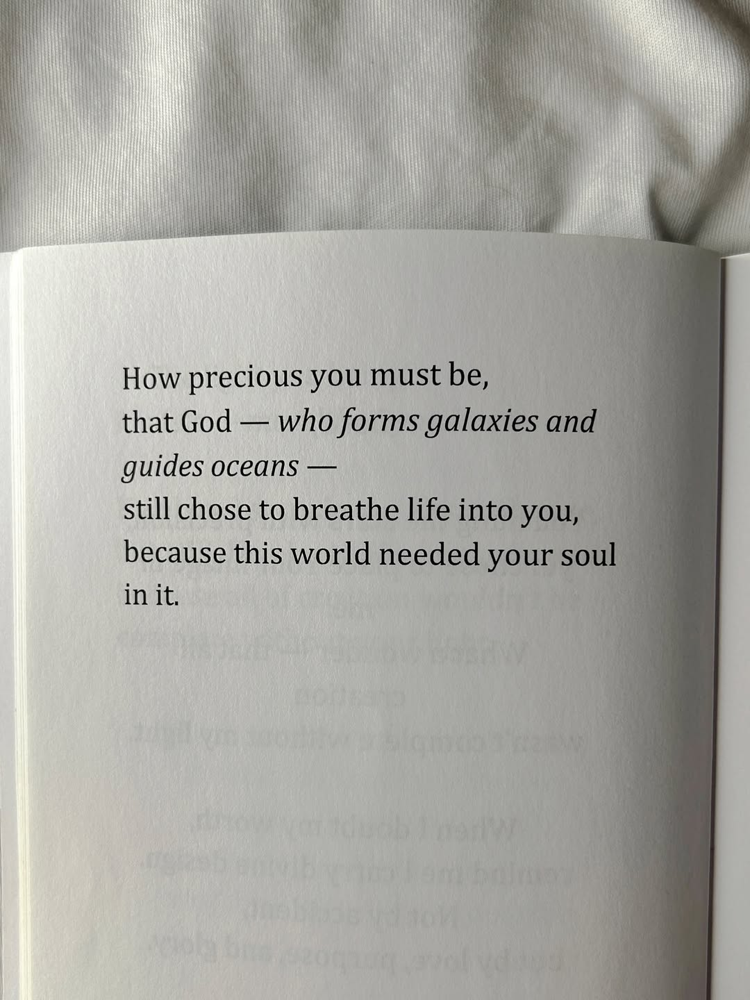
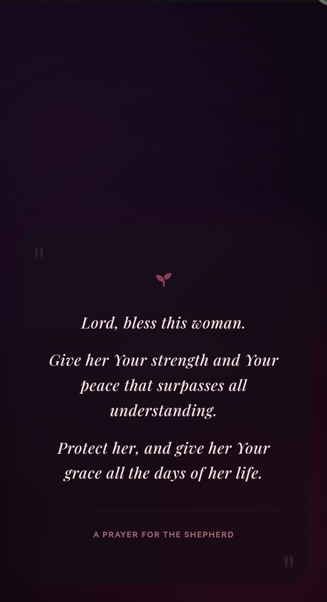
There were misunderstandings, reactions and moments when one of us needed something the other didn't recognise quickly enough. I don't want to erase the difficult parts just because the beautiful parts are easier to hold.
You are not a burden.
A memory I kept
The handwritten note.
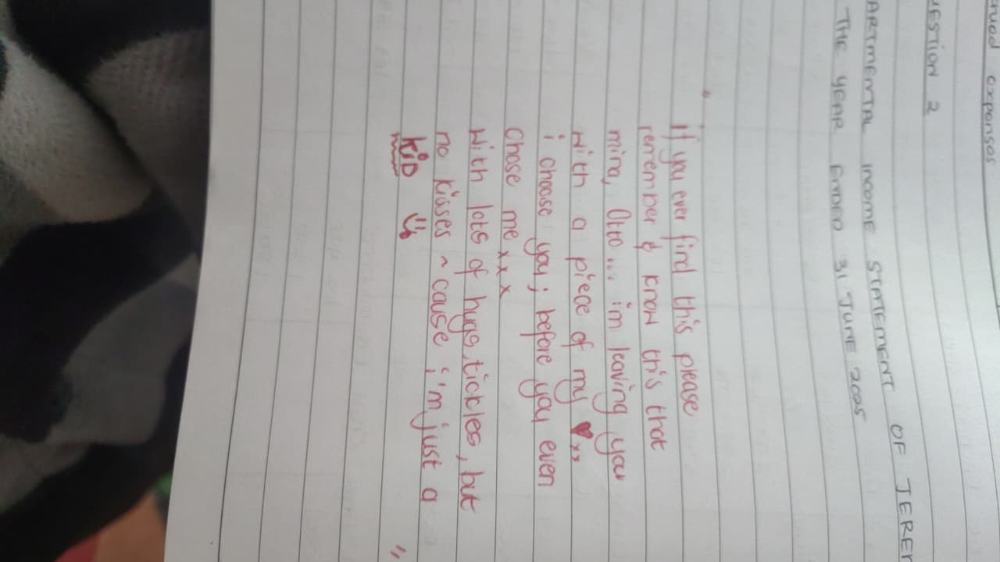
What remains
I don't know which of these moments you carried too.
I don't want this page to answer that question for you. These are simply the ones that stayed with me. Some made me laugh. Some made me hopeful. Some confused me. Some hurt. Some taught me things about myself I probably would not have learned comfortably.
When I gather them together now, gratitude is louder than regret.
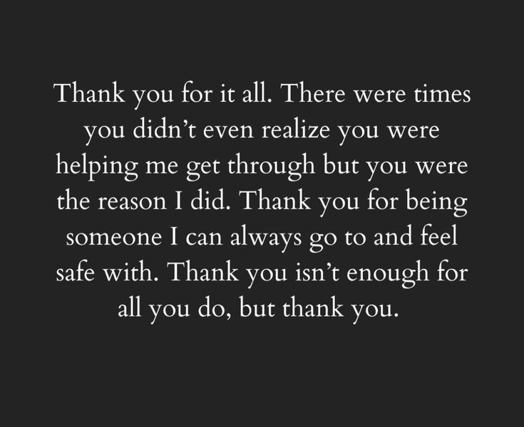
One last thing from my heart.
My heart sang for you.
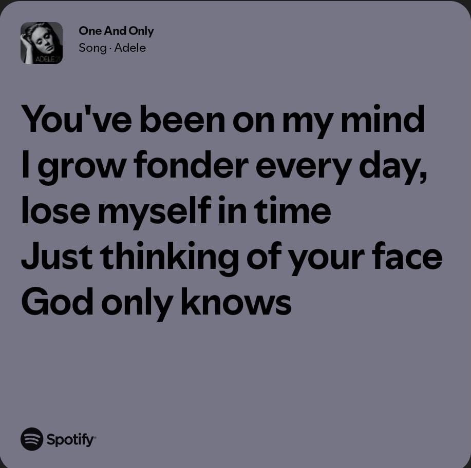
I loved you wholeheartedly. I still care deeply, and I don't want to write an ending that pretends love disappears simply because things became difficult.
We have argued. I have overthought things. There have been moments when hurt made me push you away, even when what I really wanted was to understand you and to feel understood by you.
And then there was something you said that broke through all of that.
You told me that you don't hate me.
I asked you why — especially after the arguments, after the difficult moments, even after I had pushed you away.
“Because I care about you.”
I was in tears.
Not because I took those words as a promise. Not because I think they answer every question between us. And not because I want to place a meaning on them that you didn't give them.
I cried because, beneath all the noise, hearing that I still mattered to you meant more to me than I knew how to say.
I don't want to say that I cannot fight for love. Love has always been worth courage to me. But I am learning that fighting for someone cannot mean fighting with them, fighting against what they say, or trying to force certainty out of something only they can define.
Maybe sometimes fighting for love means learning how to care without turning that care into pressure. Listening when I would normally overthink. Giving space without using distance as punishment. And accepting that another person's heart must always remain theirs to speak for.
I don't know what every part of our story means to you.
I only know what it has meant to me.
You gave ordinary days colour. You made me laugh. You frustrated me. You worried about me. You let me worry about you. We misunderstood each other. We found each other again. And somewhere amongst all of that, my heart sang for you.
So this isn't me saying, “I won't fight for you.”
I don't want love to become a fight between us.
Whatever comes next, thank you for caring about me. When I asked you why you didn't hate me, you could have answered in a hundred different ways.
You said you cared.
I heard you.
And that mattered.
Good morning, Queen. ♛